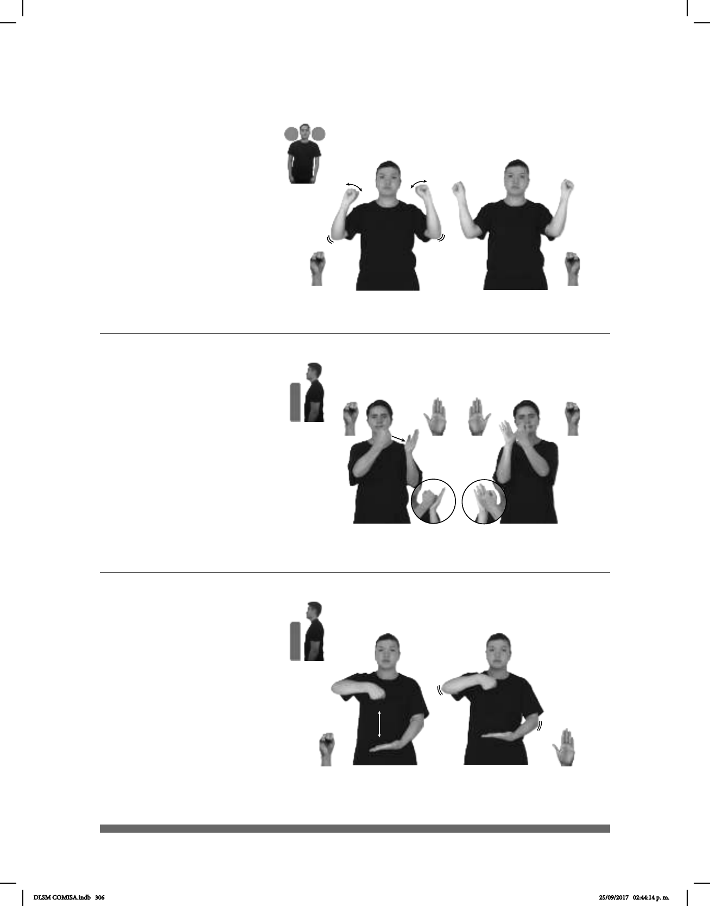

306
(S-38)
Seña: SB
MD S.1, MB B-P.2
MD palma hacia dentro. MB
palma hacia arriba.
MD a la altura del pecho. MB a
la altura del plexo.
MD y MB simulan varios
saltos.
Simula la acción de cargar
una cubeta.
sust. f. Recipiente de forma
cilíndrica o ligeramente cónica, con un asa
diámetro de la boca; sirve para contener y
transportar especialmente líquidos.
Seña: SC: I. y II. SB
I. MD S.1, MB B-P.2; II. MD
B-P.2, MB S.1
I. MD palma hacia dentro, MB
palma oblicua hacia la derecha y hacia fuera;
II. MD palma oblicua hacia la izquierda y hacia
fuera, MB palma hacia dentro.
I. y II. MD y MB a la altura de los
hombros.
I. La MD golpea a la MB en
línea recta; II. La MB golpea a la MD en línea
recta.
v. tr. Clavar en una cruz a alguien
como suplicio.
La seña se usa a la comunidad
sorda cristiana y católica.
(S-39)
ÚNICO HIJO DIOS JESÚS pro-ÉL CRUCIFICAR
SEÑORA ESQUINA MUCHO CUBETA VENDER.
La señora de la esquina vende muchas cubetas.
Seña: SS
S.1
Palmas hacia fuera.
A la altura de los
hombros.
Las manos se agitan.
sust. Persona que
corre, especialmente la que lo hace
en competencias deportivas o
cotidianamente.
(S-37)
__muy
ESE HOMBRE JOVEN BUEN CORREDOR
Ese muchacho es muy buen corredor.
DLSM COMISA.indb 306 25/09/2017 02:44:14 p. m.